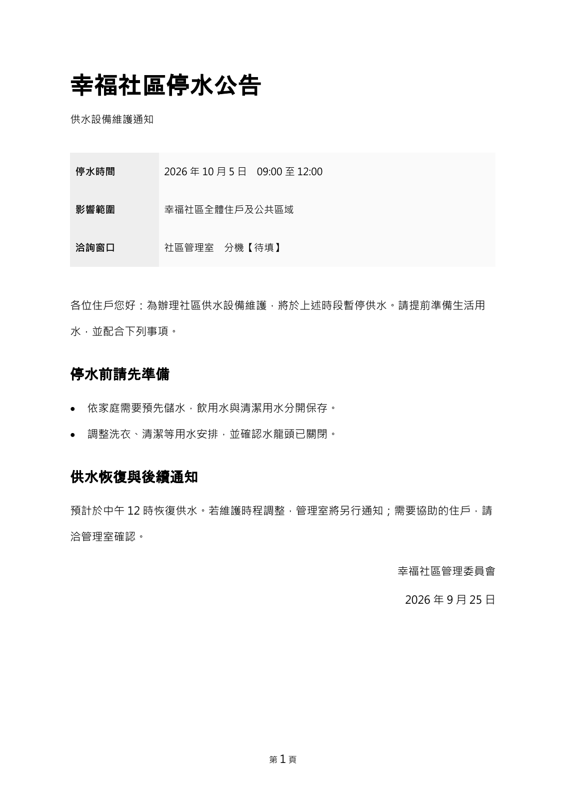

把想法寫成清楚的文字
商品介紹、通知、信件和重點整理，依用途與讀者調整語氣。
了解文字工作 →你的 LINE AI 文書與創作助手
寫公告、做表格、設計海報、讀懂檔案。
在熟悉的 LINE 裡說需求，貓咪陪你完成。
一般聊天免費 · 正式工作依方案計次 · 單次購買不自動續訂
先找到你想完成的事
隨LINE AI 由立翔人力企業社提供。用 LINE 傳送需求，依用途取得文字、文件或圖像成果。
像聊天一樣打字，或先傳檔案、圖片與公開網址。
日期、金額或對象不足時才補問，未確定可留待填。
一般文件選格式即製作；海報與大檔先確認所需點數。
在 LINE 收到回覆或下載連結，核對後即可使用。
實際成品，可以打開看

Word 可編輯，PDF 與文件圖片方便列印或分享。
看文書與 Excel 範例 →每張共 6 點文書額度，先確認再製作，交付 PNG 與海報 PDF。
看完整海報與下載範例 →以上為虛構展示範例。成果依提供資料製作，使用前請核對內容。
檔案不用重打一遍
PDF、Word、Excel、圖片與常見文字檔可先辨識。正式分析按內容量計次，大檔先報價。
基本方案
適合商品文案、信件、通知及資料整理。
文書加購
須先買過基本方案才能付費加購。
檔案分析加購
須先買過基本方案才能付費加購。
價格均為新臺幣，各付款方式同價，不另加收付款手續費。免費試用為每帳號一次性額度，不是每日補發。未使用付費額度不因下載期限屆滿而失效。
兩者是同一種額度單位。一般文書每份 1 點；插畫公告海報每張 6 點，包含文書 1 點與插畫加扣 5 點。文書、文字與檔案分析三種額度分開，不能自動互換。
在 LINE 直接傳「停止」即可。尚未完成工作的保留額度會退回，已完成的成果保留。點數退回與已支付款項退款是不同流程。
付款前填寫收件信箱；需要公司發票時填寫抬頭及統一編號。初期由業者人工開票並寄送，作業預計 5～7 日，仍依實際交易及法定時點開立、傳輸與交付。付款通知不是正式發票。
在 LINE 傳「我的訂單」查詢訂單，再依系統提示或傳「退款申請：訂單編號」提出申請。客服會查核購買、使用與交付紀錄，依個別交易情形及適用法令處理；提出申請不代表款項已退回。
從一句白話開始
加入官方 LINE，按「開始使用」，直接說出想完成的事情。